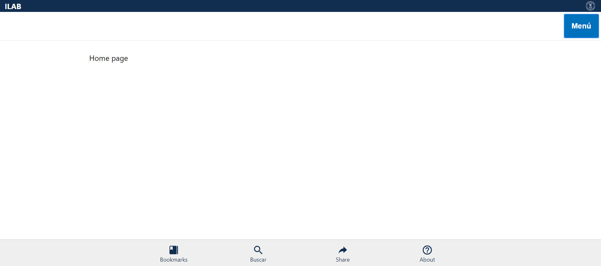
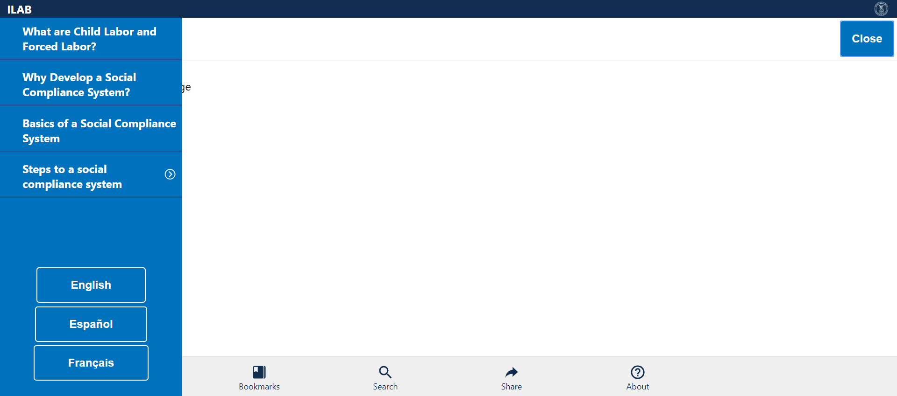
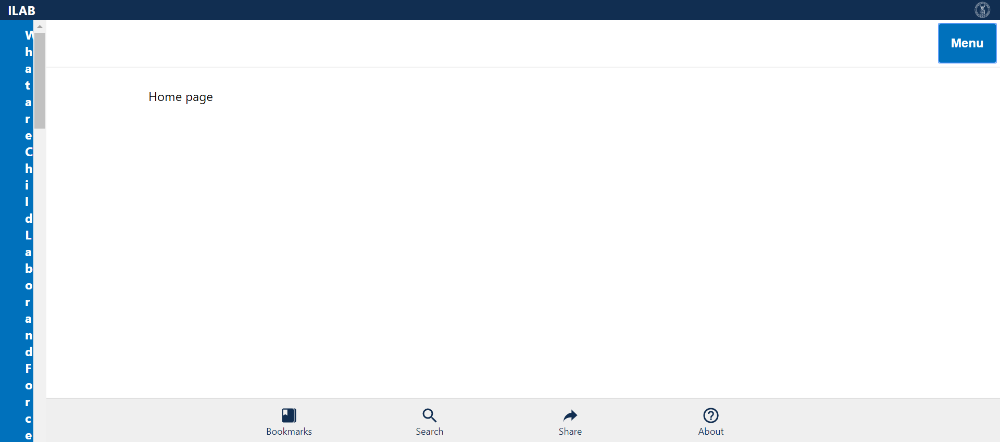
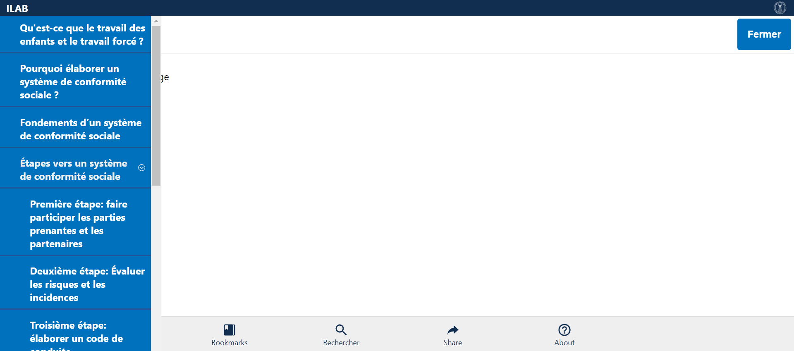

Tests
9 test(s) passed
0 test(s) failed, 0 others
Steps
192 step(s) passed
0 step(s) failed, 183 others
Tests
-
Verify Home Page in English Mar 10, 2019 04:30:48 PM passMar 10, 2019 04:30:48 PM Mar 10, 2019 04:30:55 PM 0h 0m 6s+288msVerify Home Page - Logo, Header, Home Page, Menu, Bottom bar Items in English
Status Timestamp Details check_circle 4:30:49 PM Comply Chain Logo is Displayed info_outline 4:30:49 PM 
check_circle 4:30:49 PM ILAB is displayed info_outline 4:30:49 PM check_circle 4:30:49 PM Home Page Header is displayed info_outline 4:30:50 PM 
check_circle 4:30:50 PM MENU is Displayed info_outline 4:30:50 PM check_circle 4:30:51 PM MENU is opened Successfully info_outline 4:30:51 PM 
check_circle 4:30:52 PM MENU is closed Successfully info_outline 4:30:52 PM 
check_circle 4:30:52 PM Bookmarks link is displayed info_outline 4:30:52 PM check_circle 4:30:52 PM Bookmarks link Verified info_outline 4:30:53 PM 
check_circle 4:30:53 PM Search link is displayed info_outline 4:30:53 PM check_circle 4:30:53 PM Search link Verified info_outline 4:30:53 PM check_circle 4:30:53 PM Share link is displayed info_outline 4:30:54 PM 
check_circle 4:30:54 PM Share link Verified info_outline 4:30:54 PM check_circle 4:30:54 PM About link is displayed info_outline 4:30:54 PM check_circle 4:30:54 PM About link Verified info_outline 4:30:55 PM 
check_circle 4:30:55 PM HomePageVerification_English Test Case PASSED -
Verify Home Page in Español Mar 10, 2019 04:31:01 PM passMar 10, 2019 04:31:01 PM Mar 10, 2019 04:31:08 PM 0h 0m 7s+175msVerify Home Page - Logo, Header, Home Menu, Bottom bar Items in Español
Status Timestamp Details check_circle 4:31:01 PM Comply Chain Logo is Displayed info_outline 4:31:01 PM 
check_circle 4:31:01 PM ILAB is displayed info_outline 4:31:02 PM 
check_circle 4:31:02 PM Home Page Header is displayed info_outline 4:31:02 PM check_circle 4:31:02 PM Menú is Displayed info_outline 4:31:02 PM check_circle 4:31:05 PM Menú is opened Successfully info_outline 4:31:05 PM check_circle 4:31:05 PM Menú is closed Successfully info_outline 4:31:05 PM check_circle 4:31:05 PM Bookmarks link is displayed info_outline 4:31:06 PM  check_circle 4:31:06 PM Bookmarks link Verified info_outline 4:31:06 PM check_circle 4:31:06 PM Buscar link is displayed info_outline 4:31:06 PM check_circle 4:31:06 PM Buscar link Verified info_outline 4:31:07 PM 
check_circle 4:31:07 PM Share link is displayed info_outline 4:31:07 PM check_circle 4:31:07 PM Share link Verified info_outline 4:31:07 PM check_circle 4:31:07 PM About link is displayed info_outline 4:31:08 PM check_circle 4:31:08 PM About link Verified info_outline 4:31:08 PM check_circle 4:31:08 PM HomePageVerification_Español Test Case PASSED -
Verify Home Page in Français Mar 10, 2019 04:31:14 PM passMar 10, 2019 04:31:14 PM Mar 10, 2019 04:31:21 PM 0h 0m 7s+249msVerify Home Page - Logo, Header, Home Menu, Bottom bar Items in Français
Status Timestamp Details check_circle 4:31:14 PM Comply Chain Logo is Displayed info_outline 4:31:14 PM 
check_circle 4:31:14 PM ILAB is displayed info_outline 4:31:15 PM 
check_circle 4:31:15 PM Home Page Header is displayed info_outline 4:31:15 PM check_circle 4:31:15 PM Menu is Displayed info_outline 4:31:15 PM check_circle 4:31:18 PM Menú is opened Successfully info_outline 4:31:18 PM 
check_circle 4:31:18 PM Menu is closed Successfully info_outline 4:31:18 PM check_circle 4:31:18 PM Bookmarks link is displayed info_outline 4:31:19 PM 
check_circle 4:31:19 PM Bookmarks link Verified info_outline 4:31:19 PM check_circle 4:31:19 PM Rechercher link is displayed info_outline 4:31:19 PM check_circle 4:31:19 PM Rechercher link Verified info_outline 4:31:20 PM 
check_circle 4:31:20 PM Share link is displayed info_outline 4:31:20 PM check_circle 4:31:20 PM Share link Verified info_outline 4:31:20 PM check_circle 4:31:20 PM About link is displayed info_outline 4:31:21 PM 
check_circle 4:31:21 PM About link Verified info_outline 4:31:21 PM check_circle 4:31:21 PM HomePageVerification_Français Test Case PASSED -
Verify Menu in English Mar 10, 2019 04:31:27 PM passMar 10, 2019 04:31:27 PM Mar 10, 2019 04:31:34 PM 0h 0m 6s+894msVerify Menu - Topics and Language Items in English
Status Timestamp Details check_circle 4:31:27 PM Comply Chain Logo is Displayed info_outline 4:31:27 PM 
check_circle 4:31:27 PM ILAB is displayed info_outline 4:31:28 PM 
check_circle 4:31:28 PM MENU is Displayed info_outline 4:31:28 PM check_circle 4:31:29 PM MENU is opened Successfully info_outline 4:31:29 PM 
check_circle 4:31:29 PM What are Child Labor and Forced Labor? link is displayed info_outline 4:31:30 PM 
check_circle 4:31:30 PM What are Child Labor and Forced Labor? link Verified info_outline 4:31:30 PM check_circle 4:31:30 PM Why Develop a Social Compliance System? link is displayed info_outline 4:31:30 PM check_circle 4:31:31 PM Why Develop a Social Compliance System? link Verified info_outline 4:31:31 PM  check_circle 4:31:31 PM Basics of a Social Compliance System link is displayed info_outline 4:31:31 PM check_circle 4:31:31 PM Basics of a Social Compliance System link Verified info_outline 4:31:32 PM 
check_circle 4:31:32 PM Steps to a social compliance system is displayed info_outline 4:31:32 PM check_circle 4:31:32 PM Steps to a social compliance system Verified with Expandable Arrow Mark info_outline 4:31:32 PM check_circle 4:31:32 PM English Language Button is displayed and Verfied info_outline 4:31:32 PM check_circle 4:31:33 PM Español Language Button is displayed and Verfied info_outline 4:31:33 PM 
check_circle 4:31:33 PM Français Language Button is displayed and Verfied info_outline 4:31:33 PM check_circle 4:31:33 PM MENU is closed Successfully info_outline 4:31:34 PM  check_circle 4:31:34 PM MenuVerification_English Test Case PASSED -
Verify Menu in Español Mar 10, 2019 04:31:39 PM passMar 10, 2019 04:31:39 PM Mar 10, 2019 04:31:47 PM 0h 0m 8s+160msVerify Menu - Topics and Language Items in Español
Status Timestamp Details check_circle 4:31:39 PM Comply Chain Logo is Displayed info_outline 4:31:40 PM 
check_circle 4:31:40 PM ILAB is displayed info_outline 4:31:40 PM check_circle 4:31:40 PM Menú is Displayed info_outline 4:31:40 PM check_circle 4:31:43 PM Menú is opened Successfully info_outline 4:31:43 PM 
check_circle 4:31:43 PM ¿Qué son el trabajo infantil y el trabajo forzoso? link is displayed info_outline 4:31:43 PM check_circle 4:31:43 PM ¿Qué son el trabajo infantil y el trabajo forzoso? link Verified info_outline 4:31:44 PM 
check_circle 4:31:44 PM ¿Por qué crear un sistema de cumplimiento social? link is displayed info_outline 4:31:44 PM check_circle 4:31:44 PM ¿Por qué crear un sistema de cumplimiento social? link Verified info_outline 4:31:44 PM check_circle 4:31:44 PM Aspectos básicos de un sistema de cumplimiento social link is displayed info_outline 4:31:45 PM 
check_circle 4:31:45 PM Aspectos básicos de un sistema de cumplimiento social link Verified info_outline 4:31:45 PM check_circle 4:31:45 PM Pasos hacia un sistema de cumplimiento social is displayed info_outline 4:31:45 PM check_circle 4:31:45 PM Pasos hacia un sistema de cumplimiento social Verified with Expandable Arrow Mark info_outline 4:31:46 PM 
check_circle 4:31:46 PM English Language Button is displayed and Verfied info_outline 4:31:46 PM check_circle 4:31:46 PM Español Language Button is displayed and Verfied info_outline 4:31:47 PM 
check_circle 4:31:47 PM Français Language Button is displayed and Verfied info_outline 4:31:47 PM check_circle 4:31:47 PM Menú is closed Successfully info_outline 4:31:47 PM check_circle 4:31:47 PM MenuVerification_Español Test Case PASSED -
Verify Menu in Français Mar 10, 2019 04:31:53 PM passMar 10, 2019 04:31:53 PM Mar 10, 2019 04:32:01 PM 0h 0m 7s+825msVerify Menu - Topics and Language Items in Français
Status Timestamp Details check_circle 4:31:53 PM Comply Chain Logo is Displayed info_outline 4:31:54 PM 
check_circle 4:31:54 PM ILAB is displayed info_outline 4:31:54 PM check_circle 4:31:54 PM Menu is Displayed info_outline 4:31:54 PM check_circle 4:31:56 PM Menú is opened Successfully info_outline 4:31:57 PM 
check_circle 4:31:57 PM Qu'est-ce que le travail des enfants et le travail forcé ? link is displayed info_outline 4:31:57 PM check_circle 4:31:57 PM Qu'est-ce que le travail des enfants et le travail forcé ? link Verified info_outline 4:31:57 PM check_circle 4:31:57 PM Pourquoi élaborer un système de conformité sociale ? link is displayed info_outline 4:31:58 PM 
check_circle 4:31:58 PM Pourquoi élaborer un système de conformité sociale ? link Verified info_outline 4:31:58 PM check_circle 4:31:58 PM Fondements d’un système de conformité sociale link is displayed info_outline 4:31:58 PM check_circle 4:31:59 PM Fondements d’un système de conformité sociale link Verified info_outline 4:31:59 PM 
check_circle 4:31:59 PM Étapes vers un système de conformité sociale is displayed info_outline 4:31:59 PM check_circle 4:31:59 PM Étapes vers un système de conformité sociale Verified with Expandable Arrow Mark info_outline 4:31:59 PM check_circle 4:31:59 PM English Language Button is displayed and Verfied info_outline 4:32:00 PM 
check_circle 4:32:00 PM Español Language Button is displayed and Verfied info_outline 4:32:00 PM check_circle 4:32:00 PM Français Language Button is displayed and Verfied info_outline 4:32:01 PM 
check_circle 4:32:01 PM Menu is closed Successfully info_outline 4:32:01 PM check_circle 4:32:01 PM MenuVerification_Français Test Case PASSED -
Verify Steps in English Mar 10, 2019 04:32:07 PM passMar 10, 2019 04:32:07 PM Mar 10, 2019 04:32:19 PM 0h 0m 12s+451msVerify Step Items in English
Status Timestamp Details check_circle 4:32:07 PM Comply Chain Logo is Displayed info_outline 4:32:07 PM 
check_circle 4:32:07 PM ILAB is displayed info_outline 4:32:07 PM check_circle 4:32:07 PM MENU is Displayed info_outline 4:32:08 PM 
check_circle 4:32:09 PM MENU is opened Successfully info_outline 4:32:09 PM 
check_circle 4:32:09 PM What are Child Labor and Forced Labor? link is displayed info_outline 4:32:10 PM check_circle 4:32:10 PM What are Child Labor and Forced Labor? link Verified info_outline 4:32:10 PM check_circle 4:32:10 PM Why Develop a Social Compliance System? link is displayed info_outline 4:32:10 PM check_circle 4:32:10 PM Why Develop a Social Compliance System? link Verified info_outline 4:32:11 PM 
check_circle 4:32:11 PM Basics of a Social Compliance System link is displayed info_outline 4:32:11 PM check_circle 4:32:11 PM Basics of a Social Compliance System link Verified info_outline 4:32:11 PM check_circle 4:32:11 PM Steps to a social compliance system is displayed info_outline 4:32:12 PM 
check_circle 4:32:12 PM Steps to a social compliance system Verified with Expandable Arrow Mark info_outline 4:32:12 PM check_circle 4:32:12 PM Steps to a social compliance system Expanded info_outline 4:32:12 PM check_circle 4:32:12 PM Step 1: Engage Stakeholders and Partners is displayed info_outline 4:32:13 PM 
check_circle 4:32:13 PM Step 1: Engage Stakeholders and Partners is Verified info_outline 4:32:13 PM check_circle 4:32:13 PM Step 2: Assess Risks And Impacts is displayed info_outline 4:32:13 PM check_circle 4:32:14 PM Step 2: Assess Risks And Impacts is Verified info_outline 4:32:14 PM 
check_circle 4:32:14 PM Step 3: Develop a Code of Conduct displayed info_outline 4:32:14 PM check_circle 4:32:14 PM Step 3: Develop a Code of Conduct Verified info_outline 4:32:15 PM 
check_circle 4:32:15 PM Step 4: Communicate and Train across your Supply Chain displayed info_outline 4:32:15 PM check_circle 4:32:15 PM Step 4: Communicate and Train across your Supply Chain Verified info_outline 4:32:15 PM check_circle 4:32:15 PM Step 5: Monitor Compliance is displayed info_outline 4:32:16 PM 
check_circle 4:32:16 PM Step 5: Monitor Compliance Verified info_outline 4:32:16 PM check_circle 4:32:16 PM Step 6: Remediate Violations displayed info_outline 4:32:17 PM 
check_circle 4:32:17 PM Step 6: Remediate Violations Verified info_outline 4:32:17 PM check_circle 4:32:17 PM Step 7: Independent Review displayed info_outline 4:32:17 PM check_circle 4:32:17 PM Step 7: Independent Review Verified info_outline 4:32:18 PM 
check_circle 4:32:18 PM Step 8: Report Performance displayed info_outline 4:32:18 PM check_circle 4:32:18 PM Step 8: Report Performance Verified info_outline 4:32:18 PM check_circle 4:32:18 PM Steps to a social compliance system Collapsed info_outline 4:32:19 PM check_circle 4:32:19 PM MENU is closed Successfully info_outline 4:32:19 PM check_circle 4:32:19 PM MenuVerification_English Test Case PASSED -
Verify Steps in Español Mar 10, 2019 04:32:25 PM passMar 10, 2019 04:32:25 PM Mar 10, 2019 04:32:38 PM 0h 0m 13s+468msVerify Step Items in Español
Status Timestamp Details check_circle 4:32:25 PM Comply Chain Logo is Displayed info_outline 4:32:25 PM 
check_circle 4:32:25 PM ILAB is displayed info_outline 4:32:25 PM check_circle 4:32:25 PM Menú is Displayed info_outline 4:32:26 PM 
check_circle 4:32:28 PM Menú is opened Successfully info_outline 4:32:28 PM 
check_circle 4:32:28 PM ¿Qué son el trabajo infantil y el trabajo forzoso? link is displayed info_outline 4:32:29 PM 
check_circle 4:32:29 PM ¿Qué son el trabajo infantil y el trabajo forzoso? link Verified info_outline 4:32:29 PM check_circle 4:32:29 PM ¿Por qué crear un sistema de cumplimiento social? link is displayed info_outline 4:32:29 PM check_circle 4:32:29 PM ¿Por qué crear un sistema de cumplimiento social? link Verified info_outline 4:32:30 PM 
check_circle 4:32:30 PM Aspectos básicos de un sistema de cumplimiento social link is displayed info_outline 4:32:30 PM check_circle 4:32:30 PM Aspectos básicos de un sistema de cumplimiento social link Verified info_outline 4:32:30 PM check_circle 4:32:31 PM Pasos hacia un sistema de cumplimiento social is displayed info_outline 4:32:31 PM 
check_circle 4:32:31 PM Pasos hacia un sistema de cumplimiento social Verified with Expandable Arrow Mark info_outline 4:32:31 PM check_circle 4:32:31 PM Steps to a social compliance system Expanded info_outline 4:32:32 PM 
check_circle 4:32:32 PM Primer paso: Participación de las partes interesadas y los socios is displayed info_outline 4:32:32 PM check_circle 4:32:32 PM Primer paso: Participación de las partes interesadas y los socios is Verified info_outline 4:32:32 PM check_circle 4:32:32 PM Segundo paso: Evaluación de riesgos e impacto is displayed info_outline 4:32:33 PM 
check_circle 4:32:33 PM Segundo paso: Evaluación de riesgos e impacto is Verified info_outline 4:32:33 PM check_circle 4:32:33 PM Tercer paso: Formulación de un código de conducta is displayed info_outline 4:32:33 PM check_circle 4:32:33 PM Tercer paso: Formulación de un código de conducta Verified info_outline 4:32:34 PM 
check_circle 4:32:34 PM Cuarto paso: Comunicación y capacitación en la cadena de suministro is displayed info_outline 4:32:34 PM check_circle 4:32:34 PM Cuarto paso: Comunicación y capacitación en la cadena de suministro Verified info_outline 4:32:34 PM check_circle 4:32:35 PM Quinto paso: Vigilancia y seguimiento del cumplimiento is displayed info_outline 4:32:35 PM 
check_circle 4:32:35 PM Quinto paso: Vigilancia y seguimiento del cumplimiento Verified info_outline 4:32:35 PM check_circle 4:32:35 PM Sexto paso: Remediación de infracciones is displayed info_outline 4:32:36 PM 
check_circle 4:32:36 PM Sexto paso: Remediación de infracciones Verified info_outline 4:32:36 PM check_circle 4:32:36 PM Séptimo paso: Examen independiente displayed info_outline 4:32:36 PM check_circle 4:32:36 PM Séptimo paso: Examen independiente Verified info_outline 4:32:37 PM 
check_circle 4:32:37 PM Octavo paso: Notificación del desempeño is displayed info_outline 4:32:37 PM check_circle 4:32:37 PM Octavo paso: Notificación del desempeño Verified info_outline 4:32:37 PM check_circle 4:32:37 PM Steps to a social compliance system Collapsed info_outline 4:32:38 PM check_circle 4:32:38 PM Menú is closed Successfully info_outline 4:32:38 PM check_circle 4:32:38 PM MenuVerification_Español Test Case PASSED -
Verify Steps in Français Mar 10, 2019 04:32:44 PM passMar 10, 2019 04:32:44 PM Mar 10, 2019 04:32:57 PM 0h 0m 13s+481msVerify Step Items in Français
Status Timestamp Details check_circle 4:32:44 PM Comply Chain Logo is Displayed info_outline 4:32:44 PM 
check_circle 4:32:44 PM ILAB is displayed info_outline 4:32:45 PM 
check_circle 4:32:45 PM Menu is Displayed info_outline 4:32:45 PM check_circle 4:32:47 PM Menú is opened Successfully info_outline 4:32:47 PM 
check_circle 4:32:47 PM Qu'est-ce que le travail des enfants et le travail forcé ? link is displayed info_outline 4:32:48 PM 
check_circle 4:32:48 PM Qu'est-ce que le travail des enfants et le travail forcé ? link Verified info_outline 4:32:48 PM check_circle 4:32:48 PM Pourquoi élaborer un système de conformité sociale ? link is displayed info_outline 4:32:48 PM check_circle 4:32:48 PM Pourquoi élaborer un système de conformité sociale ? link Verified info_outline 4:32:49 PM 
check_circle 4:32:49 PM Fondements d’un système de conformité sociale link is displayed info_outline 4:32:49 PM check_circle 4:32:49 PM Fondements d’un système de conformité sociale link Verified info_outline 4:32:49 PM check_circle 4:32:50 PM Étapes vers un système de conformité sociale is displayed info_outline 4:32:50 PM 
check_circle 4:32:50 PM Étapes vers un système de conformité sociale Verified with Expandable Arrow Mark info_outline 4:32:50 PM check_circle 4:32:50 PM Steps to a social compliance system Expanded info_outline 4:32:51 PM 
check_circle 4:32:51 PM Première étape: faire participer les parties prenantes et les partenaires is displayed info_outline 4:32:51 PM check_circle 4:32:51 PM Première étape: faire participer les parties prenantes et les partenaires is Verified info_outline 4:32:51 PM check_circle 4:32:51 PM Deuxième étape: Évaluer les risques et les incidences is displayed info_outline 4:32:52 PM 
check_circle 4:32:52 PM Deuxième étape: Évaluer les risques et les incidences is Verified info_outline 4:32:52 PM check_circle 4:32:52 PM Troisième étape: élaborer un code de conduite is displayed info_outline 4:32:53 PM 
check_circle 4:32:53 PM Troisième étape: élaborer un code de conduite Verified info_outline 4:32:53 PM check_circle 4:32:53 PM Step 4: Quatrième étape: communiquer et former dans l'ensemble de votre chaîne d'approvisionnement is displayed info_outline 4:32:53 PM check_circle 4:32:53 PM Quatrième étape: communiquer et former dans l'ensemble de votre chaîne d'approvisionnement Verified info_outline 4:32:54 PM 
check_circle 4:32:54 PM Cinquième étape: Surveiller la conformité is displayed info_outline 4:32:54 PM check_circle 4:32:54 PM Cinquième étape: Surveiller la conformité Verified info_outline 4:32:54 PM check_circle 4:32:54 PM Sixième étape: Réparer les infractions is displayed info_outline 4:32:55 PM 
check_circle 4:32:55 PM Sixième étape: Réparer les infractions info_outline 4:32:55 PM check_circle 4:32:55 PM Septième étape: Examen indépendant is displayed info_outline 4:32:55 PM check_circle 4:32:55 PM Septième étape: Examen indépendant Verified info_outline 4:32:56 PM  check_circle 4:32:56 PM Huitième étape: Rendre compte des résultats is displayed info_outline 4:32:56 PM check_circle 4:32:56 PM Huitième étape: Rendre compte des résultats Verified info_outline 4:32:56 PM check_circle 4:32:57 PM Steps to a social compliance system Collapsed info_outline 4:32:57 PM check_circle 4:32:57 PM Menu is closed Successfully info_outline 4:32:57 PM check_circle 4:32:57 PM MenuVerification_Français Test Case PASSED
info_outline
check_circle
cancel
cancel
error
warning
redo
clear
Dashboard
Tests
9
Steps
375
Start
Mar 10, 2019 04:30:42 PM
End
Mar 10, 2019 04:32:58 PM
Time Taken
0h 2m 15s+948ms
Environment
| Name | Value |
|---|---|
| Project Name | DOL COMPLY CHAIN |
| User Name | KAVITHA MALLIPEDDI |
| Automation Tool | SELENIUM/JAVA |
| Java Version | 1.8.0_191 |
| Operating System | WINDOWS 10 |
| Host Name | DESKTOP-I4MRD09 |
| IP Address | 192.168.200.4 |
| Environment | TEST |